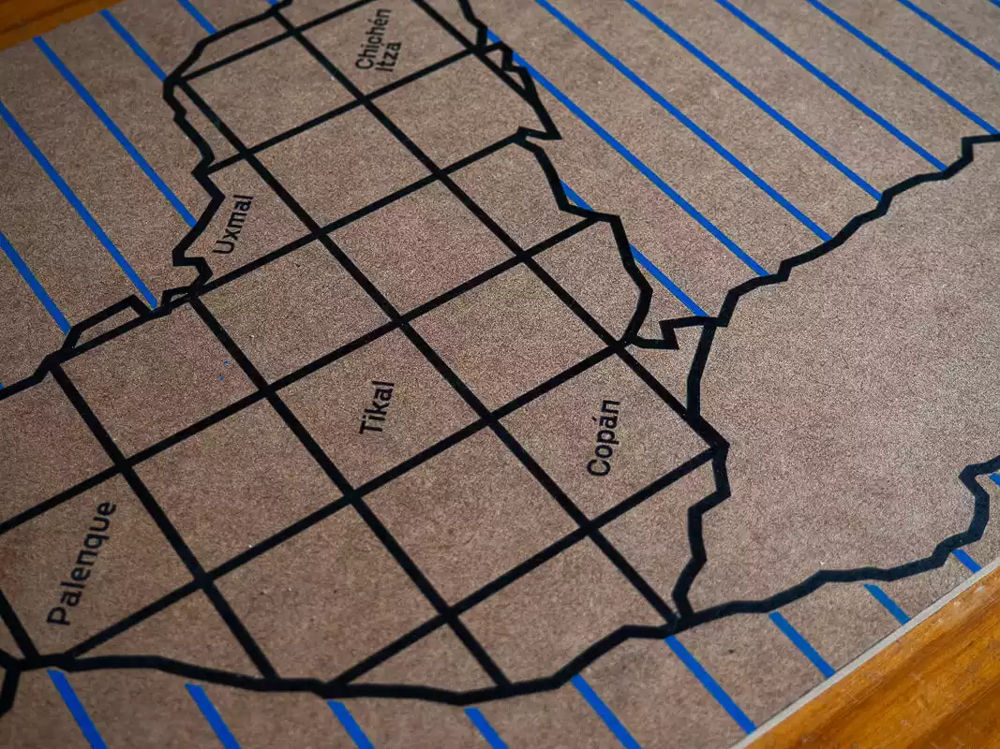
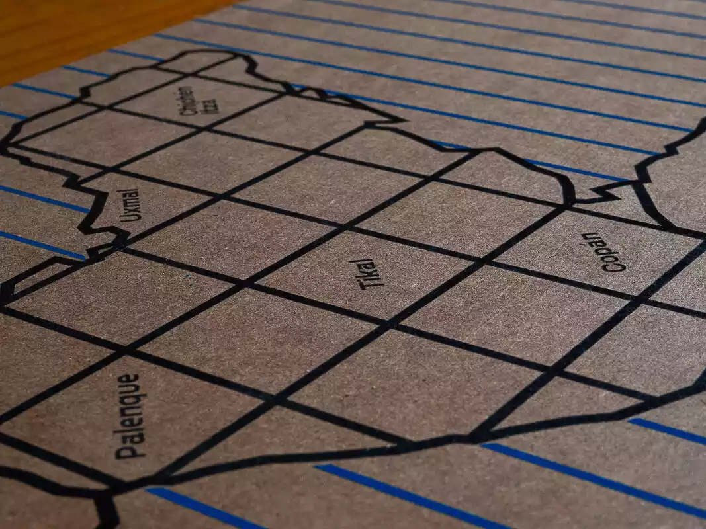
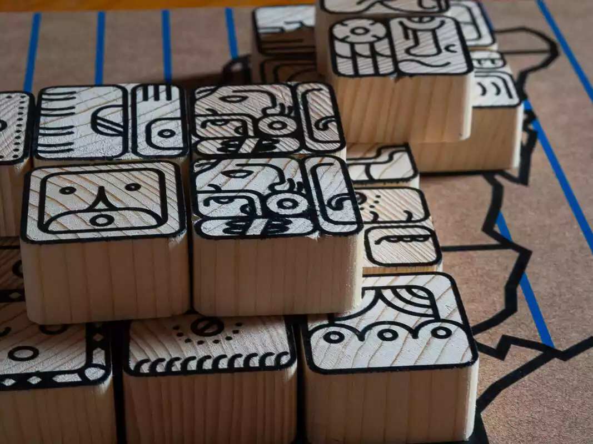
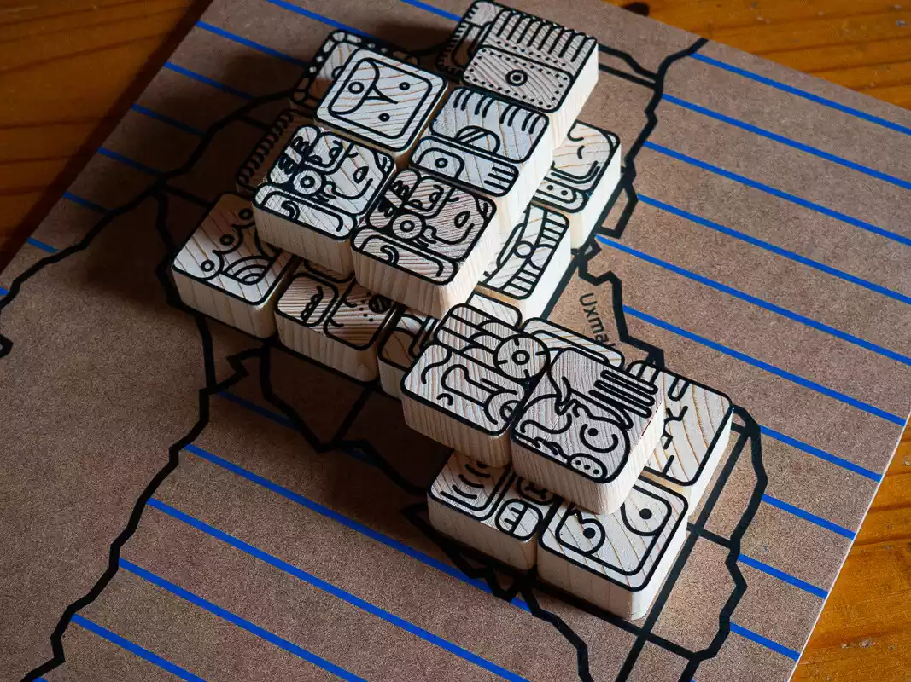
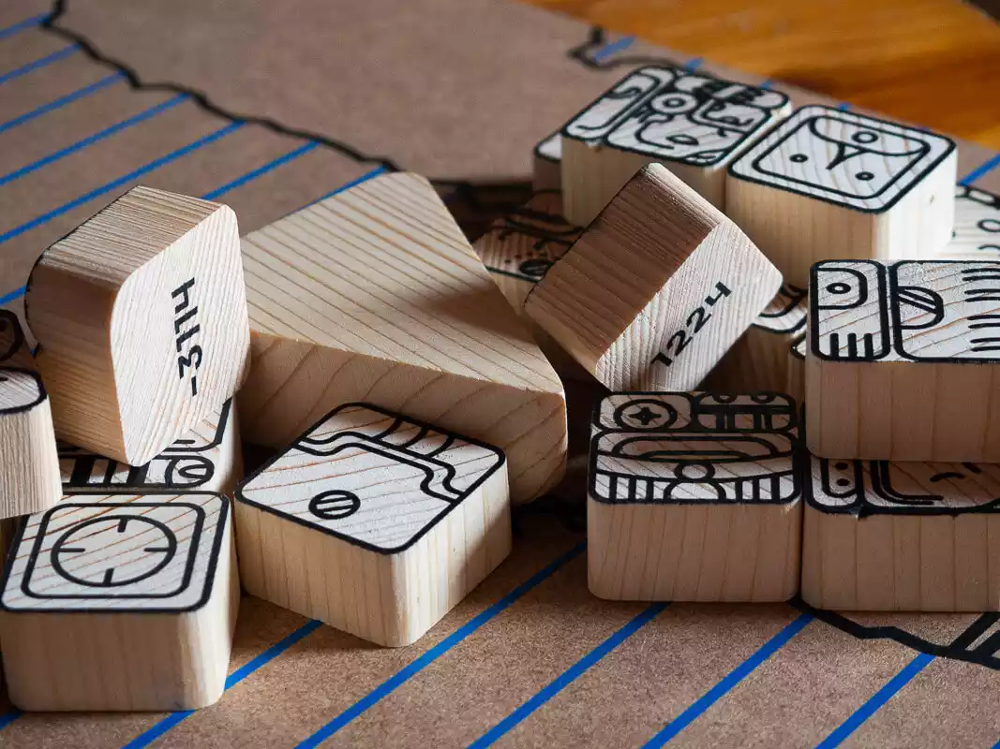
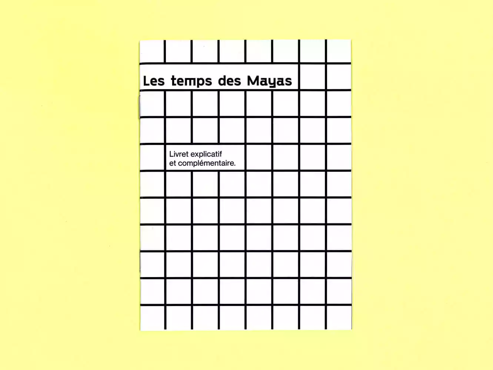
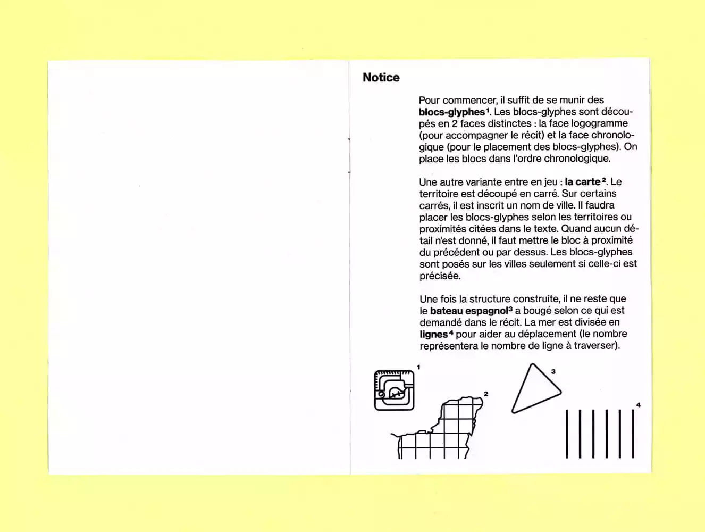
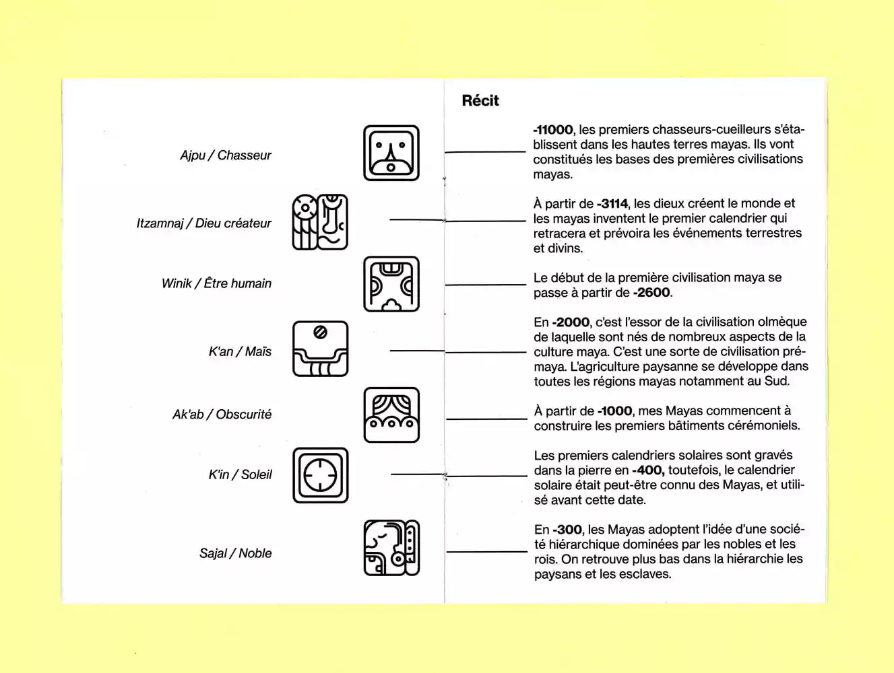
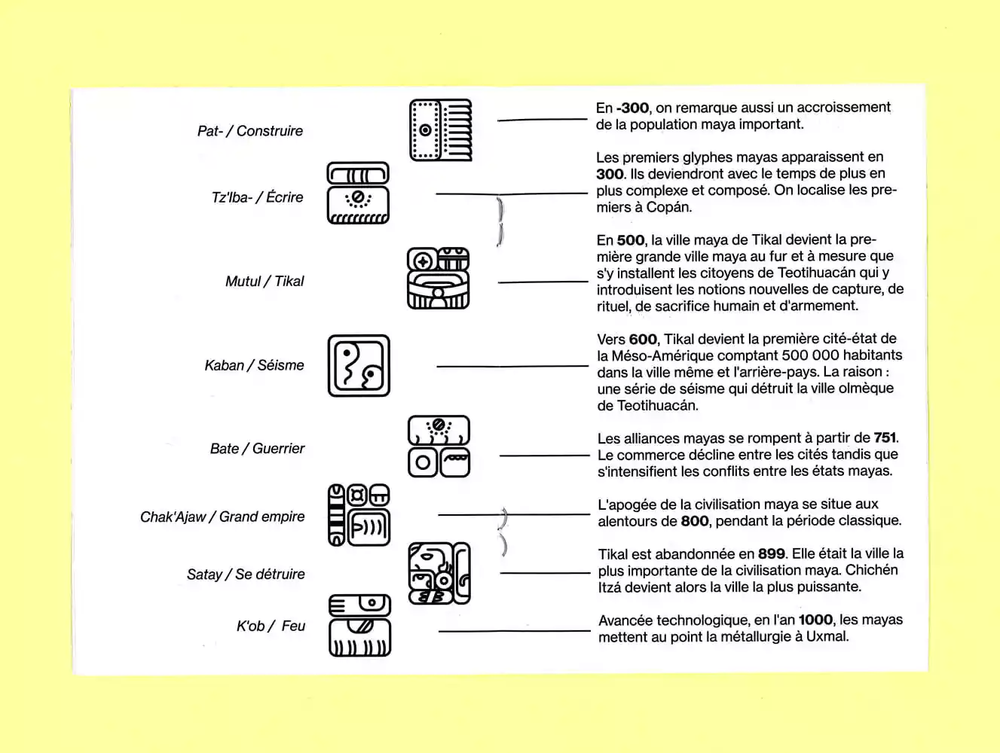
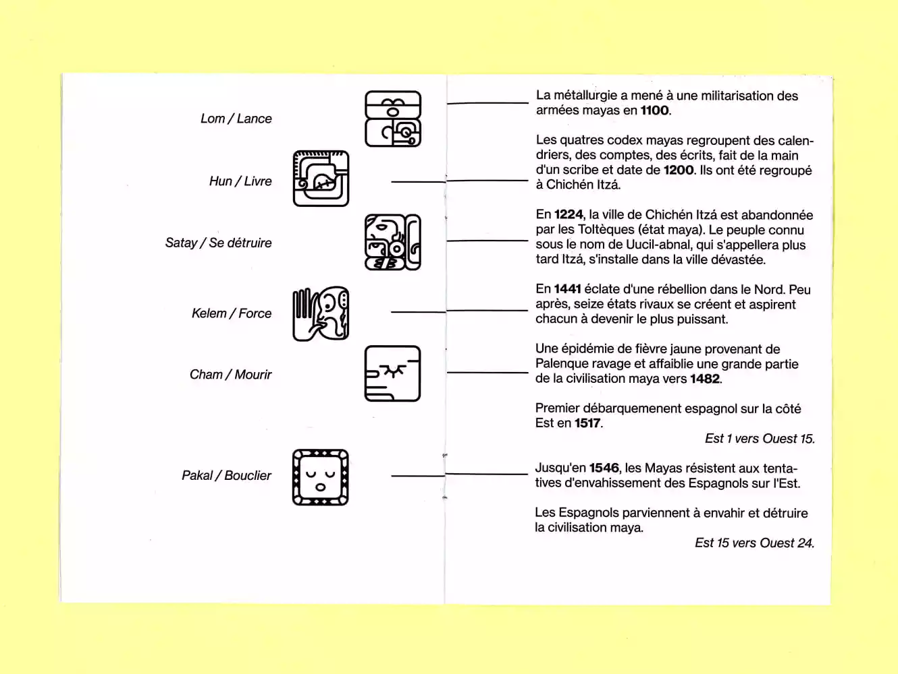

Les temps des Mayas
Objet pédagogique
«Les temps des Mayas» est un objet pédagogique mais aussi un objet de mesure du temps. Il a pour but de retracer, ou plutôt de reconstruire la civilisation maya sur des temps qui ont marqués son histoire.
L’objet est composé d’un plateau, de bloc-glyphes, et d’un livret explicatif pour comprendre et pouvoir placer les blocs.
Grâce à ces 3 parties de l’objet, les temps de la civilisation maya sont visibles cartographiquement avec le plateau, en 3 dimensions avec les blocs-glyphes que l'on superpose et dans le temps avec la scénarisation en lisant le livret.









